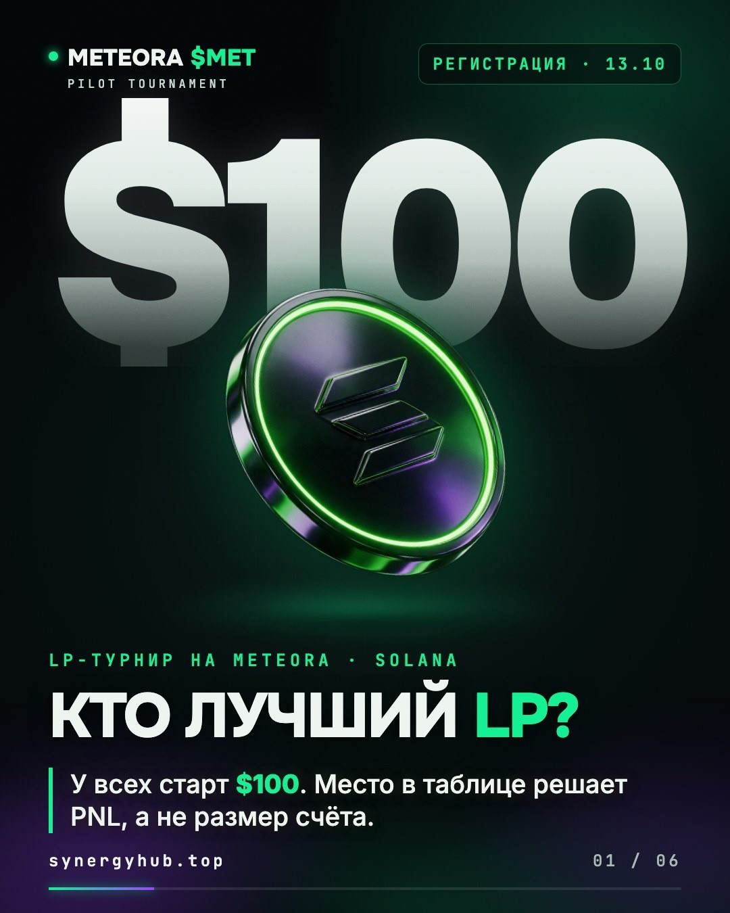
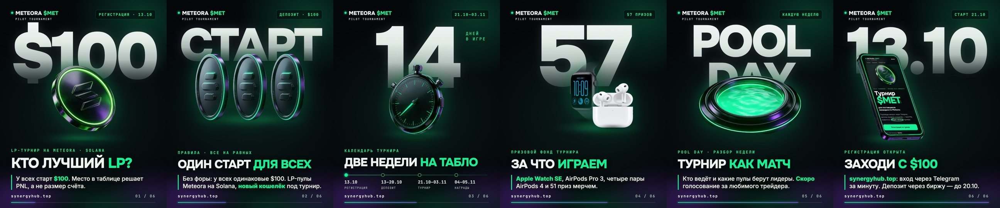
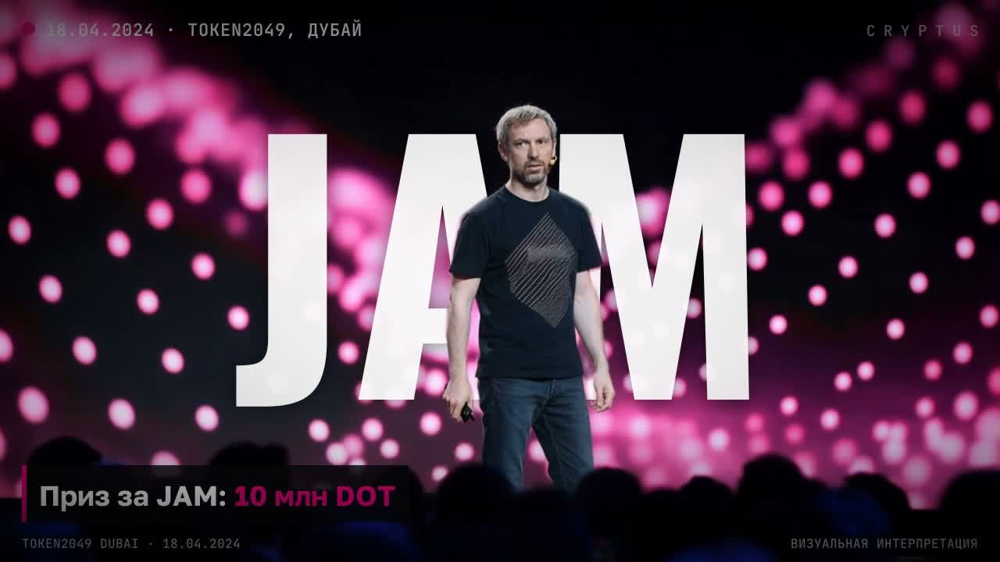
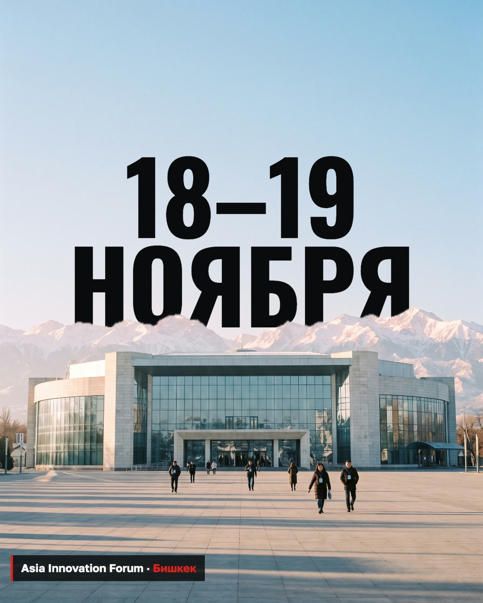
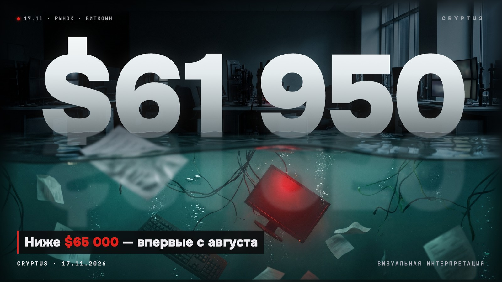
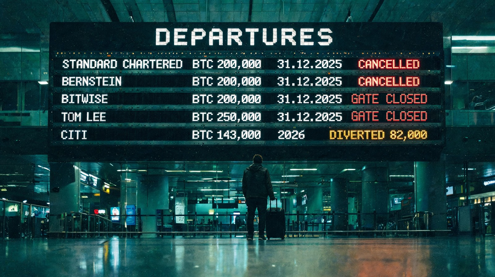
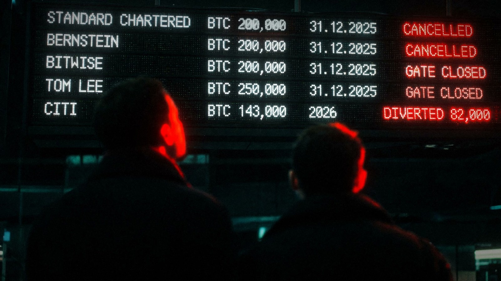
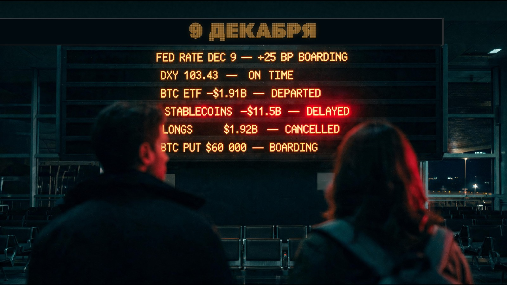

Эталон | наш — приём Метеоры, один к одному
Отметка Лео по v2: «опять что-то не то с текстом, не как Метеоры». Поэтому не угадываю, а снял числа с одобренных эталонов:
Метеора A1, JAM, AIF «18–19 НОЯБРЯ», табло DEPARTURES. Текст ставлю тем же кодом, что у Метеоры. Наша копия A1 совпала с оригиналом
почти попиксельно: средняя разница в зоне текста 2 из 255. Сцены не перегенерировал. Новая генерация одна: биткоин на гирях отдельно на чёрном.
1. «Метеора-приём» с нашим предметом — главное
Эталон · Метеора A1

Наш · биткоин на гирях (вырезан с чёрного)
Как это устроено у Метеоры: вся карусель A

Наш · тот же приём в 16:9 под пост
Критик: приём близко, 8/10
- Совпало: шрифт, градиент белый→серый, затухание низа букв, монета заходит в нижнюю погашенную зону букв, пол и тень, подписи.
- Отличие: заглавная 0,15 высоты кадра против 0,23 у A1. Слово «5 ГИРЬ» — 6 знаков, а 4:5 держит крупную заглавную только у слов до 4–5 знаков.
- Сам предмет — как вышел из генерации: одна попытка Gemini, вырезан Apple Vision.
2. «5 ГИРЬ» — сцена
Эталон · JAM (узкий герой перед словом)

Наш · монета закрывает низ букв на 30%
Критик: близко, 8/10
- Кадр опущен и чуть уменьшен: над монетой место под слово на 86% ширины. Края — размытым продолжением кадра.
- Шапка и футер как у JAM: моно-строка, разреженное CRYPTUS, «визуальная интерпретация».
3. «$61 950» — вода
Эталон · AIF «18–19 НОЯБРЯ» (горы режут только кромку)

Наш · цифры целые, под водой только низ

Критик: близко, 6/10 → доведено по его замечаниям
- Цифры плотные до самой воды: вторая часть больше не исчезает. Линия воды неровная, под водой видна часть цифр, есть отражение.
- После оценки критика сделал, что он просил: убрал нарисованную белую волну и разжал «6» и «1». Повторно критиком не проверял.
- Буквы взяты от Метеоры, не узкие чёрные, как у AIF: так вся серия держится одного шрифта. От AIF взято только правило «режем кромку».
4. «9 ДЕКАБРЯ» — табло
Эталоны · DEPARTURES и «через плечо»


Наш · заголовок — шапка самого табло

Критик: близко, 6/10 (был 4/10) → доведено
- Заголовок не снизу и не плашкой: это шапка табло тем же янтарём и шагом точек, в 2 строки ростом, как DEPARTURES.
- После оценки: над табло вместо чёрной полосы потолок с фактурой.
- Осталось: строки табло нарисовала модель. Они идут свободным текстом без колонок, а у эталона сетка. Чинится только новой генерацией или перерисовкой табло кодом, в этой задаче не трогал.
Вывод → правило (записано в styles_approved.json и TYPE.md §M)
Текст за предметом — только когда предмет вырезан чисто: отдельная генерация на чисто-чёрном (как A1)
или один герой или предмет на простом тёмном фоне. Иначе буквы Метеоры ставятся спереди целиком или в самой сцене (табло — шапкой, вода — по линии воды).
- За предметом: «Слово за героем» (Гэвин), «Улика» (Ledger), карточки с цифрой, «Человек спиной».
- В сцене: табло — шапкой, вода — по линии. Остальные 16 стилей — спереди.
- Если «Метеора-приём» тебе заходит, его можно вернуть в меню вместо снятого №3 «3D-предмет перед цифрой». Он делается тем же способом, но копией Метеоры.
Главные числа
| Метеора A1 / карусель | Наш v2 (было) | Наш сейчас |
|---|
| Ширина слова | 84–89% кадра | ≈50% | 80–86% |
| Шрифт | Onest 900, −0,05em | Fira Ex.Cond / Onest, −0,01em | Onest 900, −0,05em (цифры −0,04) |
| Цвет букв | белый → серый, низ гаснет до 38% | цветной ореол, фаска | как у Метеоры |
| Перекрытие | предмет на 22–44% высоты, только в погашенной зоне, ≤10% площади | ≤17% по контуру сцены | 25–30%, предмет вырезан |
| Предмет | отдельно на чёрном, вырез | маска из сцены | отдельно на чёрном / чистая маска |
Было (v2) — для сравнения
Файлы: visual/meteora-match/out/ · код visual/meteora_card.py, meteora-match/build.py · числа visual/TYPE.md §M.
Генераций потрачено: 1 из 4.